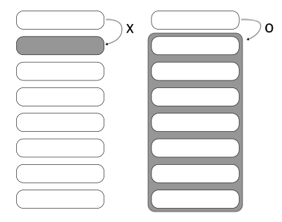

사이트내 검색
여기 글들은 일종의 질문입니다. 용어 선택도 학계, 업계에서 쓰는 걸로 되어 있지 않고, 틀린 내용이 있을 수도 있습니다.
2023-03-22 추가
아직 어떤 말로 자리 잡았는지는 확실하지 않지만, 몇 몇 글에서 “후속문”이란 번역 용어가 보입니다. 나름 뜻을 제대로 가진 용어 아닌가 싶은데, 아래는 용어를 알기 전이라 Continuation 용어를 그대로 썼습니다.
아이디어는 “함수가 결과를 리턴하지 않고, 바로 이어질 함수를 같이 넘겨서, 항상 작업이 끝나면 이어진 함수로 넘어가도록 만들자” 입니다. 함수형 프로그래밍은 스코프가 오래가는 변수가 없기 때문에 함수의 결과를 붙잡아 둘 때가 마땅히 없습니다. 그래서 굉장히 자주 쓰는 테크닉이 함수가 함수를 감싸도록 하는 겁니다. CPS스타일도 목표는 다르지 않습니다. 이어질 함수가 함수 컴포지션처럼 바깥에서 기다리냐, 아님 안 쪽에 들어가서 기다리냐 차이입니다.
아래 설명에 준비란 말이 나오면, 언젠가 나중에 인자를 받으면 실행하게 될 함수를 뜻합니다. 함수 뭉치를 바라 볼 때, 준비 상태로 보면 한 결 이해가 편할 때가 있습니다.
Free 모나드와 같이 보면 모나드 개념을 얻는데 도움이 됩니다.
값을 넣고, 나중에 함수를 넣어, 이미 있는 값에 함수를 적용하는 모양을 생각해 봅시다.
job :: Int -> (Int -> Int) -> Int
job x f = f (x + 1)
-- 아래와 같이 람다 함수 형태로 써도 같습니다.
-- 커링된 형태로 읽을 일이 있을 땐, 아래처럼 두는게 편합니다.
job x = \f -> f (x + 1)job이 끝난 결과를 job에 연결한다면
-- 함수를 받는 자리에 job을 넣어 주면
job x (job y f)
-- 나중에 외부 요소가 들어올 자리는 람다 헤드로 빼어 표시해 주면
\f -> job x (\y -> job y f)job 1은 마치 내부에 속성을 지정하듯 1을 안에 가지고 있고, 적용할 함수를 기다리는 상태입니다.
\f -> job 1 (\y -> job y f)뭔가 처음 보면 난해해 보이는 모양입니다. 읽기 어려운 이유가 뭘까요? 머릿속에서 reduction을 해야 편하게 바라 볼텐데 나중으로 미뤄 둔 게 많아 reduction을 할 수 없어 불편합니다. 어떻게 봐야 마음이 편할까요?
첫 번째, 함수 읽기
값은 가만히 있고, 함수를 값에 적용
함수는 가만히 있고, 함수에 값을 넣어주는
어떤 메타포가 더 편한가요? 저는 위와 같은 경우는 쓰여 있는 순서대로 읽는게 편합니다. 물론 항상 그렇다는 말은 아닙니다. 함수형을 하다보면 값이 기다리고 있는 걸로 볼 때가 더 많습니다. 여기서는 함수가 뒤에 나오는 바람에 순서대로 읽다보니 차이가 생겼습니다.
“job 1로 1 + 1 작업이 끝난 결과를 \y -> ... 에 넣어준다”
두 번째, 헤드 없이 바라 보면 상수Constant, 고정으로 보기
(\y -> job y f) 만 놓고 보면 f는 아직 헤드가 없습니다. 이렇게 보면 f는 바인드된 변수가 아니니, 고정된 함수로 보고 읽습니다.
세 번째, 센스 있는 이름으로 바꾸기
-- 마지막에 실행되는 함수라는 의미로 lastf
\lastf -> job 1 (\y -> job y lastf)정리하면, 저는
“1을 받아 첫 번째 job에 넘겨 (+1)을 하고, 결과를 두 번째 job이 받아 또 (+1)을 하고 여기에, 함수를 받아 적용할 준비를 한 상태”
라고 읽습니다.
얼핏 생각하면 이런 함수로 뭘 할 수 있을까 싶습니다. 이런 작업을 하는 대표적인 함수로 const의 쓰임을 보겠습니다.
const :: a -> b -> a
> const 10 "ok"
> 10인자 두 개를 받아 하나를 버리는 함수입니다. 이 걸 어디다 쓸까 싶은데 다음과 같은 경우 유용하게 쓰입니다.
data Person = Person { name :: String, age :: Int }
person1 = Person "Who" 10
-- 값을 수정하는 함수를 받습니다.
modifyPersonAge :: (Int -> Int) -> Person -> Person
modifyPersonAge f person = person { age = f (age person) }내부에 이미 있는 값을 바꾸는 함수를 받는 모양일 때, 안에 있는 값을 수정하는게 아닌 새로운 값으로 바꾸려고 할 때 쓸 수 있습니다. 단순히 버리기만 하는 게 의미 있는 동작일 때도 있습니다.
바꿀 “값”을 넣어주는 것과 “함수”를 넣어주는 차이가 뭘까요? 바꿀 “값”을 넣어주려면 “값”을 계산한 후 넣어줘야 하지만, “함수”를 넣어주면 꼭 필요한 순간까지 계산을 뒤로 미룰 수 있습니다. 하지만, 하스켈은 어차피 레이지하기 때문에 func (1+1)을 해도 1+1을 thunk로 가지고 있지 계산을 바로 하지 않습니다. 그럼 굳이 함수를 넘길 필요가 있을까요? 함수형에서는 여러 함수들을 엮고 엮어서 나중에 한방에 실행해서 결과물을 얻는 스타일로 작성합니다. 만일 안쪽에서 함수를 엮는 중간에 끼워넣어 엮고 싶다면 함수를 넘기는게 유용할 수 있습니다.
> modifyPersonAge (const 20) person1
Person {name = "Who", age = 20}iHaveFuncs :: ( (String -> String) -> String ) -> String
iHaveFuncs f = f (<> " is not your func")
needFunc :: (String -> String) -> String
needFunc f = f "f"
exec = iHaveFuncs $ \havefunc -> needFunc havefunc
> exec
"f is not your func"고차 함수로 꼬아 꼬아 놨습니다. 이 글 끝에 같은 걸 보는데, iHaveFuncs가 넣어주는 함수보다 복잡한 걸 넣어주는 함수를 만납니다. 그 전에 살짝 준비 운동을 하면 좋습니다.
needFunc f = f "f" 에서 f는 나중에 누군가한테서 받아올 함수를 위한 자리입니다.
iHaveFuncs f = f (...) 에서 f는 needFunc 같은 모양의 함수를 받을 자리입니다.
지금부터가 핵심 테크닉입니다. needFunc가 받을 함수를 우리가 아니라 iHaveFuncs가 넣어줍니다.
iHaveFuncs는 미리 넣어 줄 함수 (<> " is not your func")를 미리 가지고 있습니다. needFunc 모양의 함수를 받으면 그 함수에게 갖고 있던 (<>...) 함수를 넣어 줍니다.
함수를 인자로 받는 함수를 고차 함수라 합니다. 이 용어를 이용하면,
ihaveFuncs는 고차 함수에 넣어줄 함수를 미리 가지고 있는 고차 함수 입니다.
고차 함수를 받는 고차 함수, 고차 함수로 버무려진 코드입니다.
뭔가 C를 공부하면서 만났던 포인터의 포인터의 포인터…의 향기가 떠오릅니다.
왜 이런 짓을 하는지는 이 글 제일 아래 callCC에서 볼 수 있습니다.
명령형 프로그램에서는 계산이 진행될 때마다 상태를 갱신해서 최종 결과를 만들어냅니다. 함수형에서는 상태가 없기 때문에 단계별 계산이 어떻게 표현 될까요? 상태를 따로 두는게 아니라, 함수가 함수를 감싸도록 해서 상태를 그 즉시 다른 함수에 입력으로 넣어주면(함수를 합쳐 놓으면) 상태를 저장하는 작업이 필요 없습니다.
함수란, 필요한 입력이 모두 주어지면 그 때 작업이 시작되어서 결과를 만들어내는 “할 일”을 뜻합니다. 함수만 있을 때는 아무런 일이 일어나지 않습니다. 함수에 입력을 주는 순간 일은 시작됩니다.
명령형에서는 값(상태)을 변화시켜 가며 작업이 진행되지만, 함수형에서는 할 일을 모두 합쳐 놓는 작업을 진행하고, 마지막에 값을 주어 작업을 시작합니다.
스포이드로 잉크 한 방울을 물에 딱 떨어뜨리면 확 퍼지듯이, 먼저 함수를 엮어 놓고 제일 바깥쪽 함수에 인자를 넣는 순간 함수 뭉치가 주욱 실행됩니다.
좀 더 구체적인 느낌이 오도록 예를 들면,
(1+), (2*), (3-) 작업이 있고, 여기에 0을 넣어서 최종 결과를 받는다면,
명령형에서는
결과를 저장할 변수 r을 만들고,
r값을 계속 변화시켜 가며 작업을 진행합니다.
함수형에서는
명령형에서는 값(상태)이 변하고, 함수형에서는 함수(할 일 목록)가 변합니다.
위 개념을 그대로 코드로 옮겨 보겠습니다.
(1+), (2*), (3-) 작업을 엮어 아래 모양으로 만들어야 합니다.
\r -> 3- (2* (1+ r))주의 - 여기 예시는 단순 함수 컴포지션으로 해결이 되지만, 한 단계의 결과가 바로 다음의 결과에 영향을 주는게 아닐 경우 단순 컴포지션으로 해결할 수 없습니다.
그런데 엮여 있는 모양이 작업 순서와 반대 모양으로 나타납니다. 코드에서도 작업 순서대로 모양이 나오면 직관적이지 않을까요?
1+ 먼저, 그 다음 2*, 그 다음 3-
좀 더 일반화해서, 이전 단계의 결과가 영향을 주든 안주든, 다음 작업이 이전 작업을 품는 모양을 만들기 위해, 이어지는 작업으로 뭘 할지 인자로 넘기도록 할 수 있습니다. 작업이 끝난 후 결과를 리턴하는게 아니라, 결과를 이어지는 함수의 인자로 넘기는 모양이 됩니다. 이 걸 함수 외부에서 하는게 아니라, 함수 내부에서 항상 할 수 밖에 없게 만들면 다음과 같습니다.
주의해서 볼 건, Continuation은 바로 다음에 실행할 함수 하나가 아니라, 나머지 프로그램 전체를 의미합니다. 
func1 x = 1 + x
func2 x = 2 * x
func3 x = 3 - x
func1_cps :: Num a => a -> (a -> r) -> r
-- func1_cps x nextfunc = nextfunc $ func1 x 를 람다 함수로 표기하면
func1_cps x = \nextfunc -> nextfunc $ func1 x
-- x를 받아 작업을 하고, 결과를 바로 리턴하는게 아니라,
-- 나중에 함수를 받아서 적용할 준비가 된 상태, 즉 함수를 반환합니다.
func2_cps :: Num a => a -> (a -> r) -> r
func2_cps x = \nextfunc -> nextfunc $ func2 x
func3_cps :: Num a => a -> (a -> r) -> r
func3_cps x = \nextfunc -> nextfunc $ func3 x
cps x = \k -> func1_cps x (\x' -> func2_cps x' (\x'' -> func3_cps x'' k)) ---- (가)
> (cps 1) print -- print는 \k 매개 변수를 통해 품고 품은 모양의 가장 안쪽으로 들어가는 걸 눈여겨 보세요.
-1※ 괄호의 우선 순위를 생각하면 마치 func3_cps부터 실행하고, … 마지막에 func1_cps를 실행할 것처럼 괄호가 묶여 있습니다. 하지만, func3_cps를 실행reduce하려면 x''과 k가 있어야만 합니다. 결국 눈에 보이는대로 실행됩니다. 멀리 있는 헤드에 바인딩을 걸어두면 실행을 미룰 수 있습니다. cps를 이런식으로 복잡한 설명을 하는 게 탐탁치 않은 분들도 있을텐데, 단순 읽는 것을 넘어 어떻게 이런 코드 모양을 떠올렸는지 아이디어 연결 고리를 찾기 위해서입니다.
마지막 (가) cps 함수 모양을 보면 람다가 람다를 품는 식으로 엮여 있는데, 액션들이 많아지면 보기 편하진 않습니다. 그런데, 품는 모양이 익숙하지 않나요? 맞습니다. 모나드입니다. 하스켈에서 늘 그렇듯, 역시나 모나드 패턴을 써서 동일한 기능을 단순하게 표기할 수 있습니다. 모나드로 cps를 다르게 구현하는게 아닌, 위 람다를 품은 람다를 보기 좋은 형태로 표기하는 역할만 합니다. Control.Monad.Trans.Cont 라이브러리에 Cont 모나드가 정의되어 있습니다.
Cont 모나드는 \k -> func1_cps x (\x' -> func2_cps x' (\x'' -> func3_cps x'' k)) 모양의 코드를 좀 더 보기 좋게 만들어주는 모나드입니다.
※ 참고로 (a -> r) -> r 타입의 함수로 가장 많이 만나는 함수가 ($) 커링 상태입니다. 값을 받아서 함수를 적용하는게 아니라, 값은 이미 갖고 있고, 함수를 받으면 이 값에 적용 후 결과를 돌려주는 함수입니다.
> ($ 3) (+2)
5($ 3)은 함수를 받아서 3에다 적용 후 결과를 돌려줍니다.
Cont 모나드의 return이 이 함수를 이용해 정의되어 있습니다.
(a -> r) -> r 타입을 체이닝(품고 품게)하기 위해 바인드를 정의하는데, GHC가 이 바인드를 고를 수 있도록 (a -> r) -> r 타입을 래핑해서 새로운 타입을 만들어야 합니다.
newtype Cont r a = Cont ((a -> r) -> r)이 타입을 엮을 바인드를 정의합니다.
cont :: ((a -> r) -> r) -> Cont r a
runCont :: Cont r a -> (a -> r) -> r
instance Moand (Cont r) where
return x = cont ($ x)
s >>= f = cont $ \c -> runCont s
$ \x -> runCont (f x) c
-- 참고로 ($)는 infixr 0 우선 순위를 갖고 있습니다.
-- 센스있게 네이밍을 바꿔보면
action1 >>= receiveAction1Result = cont $ \lastc -> runCont action1
$ \result1 -> runCont (receiveAction1Result result1) lastc
-- 생각 스트레칭에서 만났던 함수와 비교하면, job과 action의 차이점은
-- action1은 이미 속성 값은 받은 상태로, 함수만 받으면 되는 상태입니다. Cont (\f ...)
-- receiveAction1Result는 action1의 결과값을 받고, 함수도 받아야 되는 상태입니다. r1 -> Cont (\f ...)
\lastf -> job 1 (\y -> job y lastf)
-- 타입 표시를 위한 cont와 runCont를 빼고, 속성을 이미 가지고 있다는 걸 염두하고 보면
\lastc -> action1 (\result1 -> (receiveAction1Result result1) lastc)
-- 동일한 모양입니다.job1을 실행하고 결과를 받아 job2를 실행하는 걸 연결한다는 말은
job1과 r -> job2 를 연결한다고 표현할 수 있습니다. 두 개의 모양을 보니 모나드 액션이 떠오르지 않나요?
m a 와 a -> m b 의 연결입니다. 참고 - 모나드 문턱에서-왜 a -> m b 타입 함수가 특별할까?
Cont 모나드를 이용하면, do 표기로 람다를 품은 람다를 숨길 수 있습니다.
func1_cont x = return $ func1 x -- 일반 함수를 CPS 스타일로 쓰기 위해 Cont로 래핑합니다.
func2_cont x = return $ func2 x
func3_cont x = return $ func3 x
cont x = do
y <- func1_cont x
z <- func2_cont y
func3_cont z
> runCont (cont 1) print -- 위와 마찬가지로 print는 품고 품은 모양의 가장 안쪽으로 들어갑니다.
-1모나드 정의를 풀어 보겠습니다. 바인드를 풀기 전에 return을 보면
return x = cont ($ x)값을 먼저 넣어서 Cont 타입을 만들어 놓으면, 나중에 함수를 받아 값에 적용할 준비를 합니다.
그럼, 다음으로 바인드를 풀어 보겠습니다.
s >>= f = cont (\c -> runCont s (\x -> runCont (f x) c))
-- 설명하기 좋게 함수, 변수명을 바꾸면
action >>= nextf =
cont (\lastFunc -> runCont action (
\actionResult -> runCont (nextf actionResult) lastFunc
))위에 나왔던 cps 예시 코드를 비교를 위해 두 개만 엮는 모양으로 다시 쓰면,
cps x = \k -> func1_cps x (\x' -> func2_cps x' k )
-- 설명하기 좋게 함수, 변수명을 바꾸면
cps x = \lastFunc -> func1_cps x (\func1Result -> func2_cps func1Result lastFunc)바인드 정의가 조금 감이 오지 않나요?
>>=의 첫 번째 인자 s는 Cont 타입, 두 번째 인자 f는 a -> Cont r a 타입.
Cont 값을 runCont로 벗겨내면 “나중에 함수를 받아서 적용할 값이 있는 상태”가 됩니다.
runCont s는 함수를 받을 상태가 되고, 여기에 (\x -> ...) 함수를 넘기면 s에 들어 있는 값에 (\x -> ...) 를 적용하게 됩니다.
f :: a -> Cont r a를 x에 적용하면 다시 Cont 값이 나오고,
이 걸 runCont로 다시 벗겨서 외부에서 들어 올 함수를 적용할 준비를 해놓습니다.
구체적으로 무슨 일을 하는지 감이 잘 오는 해석은 아닙니다.
구체 값을 넣어 어떻게 진행하는지 다시 보겠습니다.
func1_cont 1 >>= \a -> func2_cont a
cont (\c -> runCont (func1_cont 1) (\x -> runCont ((\a -> func2_cont a) x) c))
-- runCont (func1_cont 1) 의 결과 2를 준비한 상태에 (\x ...) 를 넘기면 ------(A)
cont (\c -> runCont ((\a -> func2_cont a) 2) c)
-- ((\a -> func2_cont a) 2) 를 풀면
-- (func2_cont 2) 의 결과는 4 ------(B)
cont (\c -> runCont (cont ($ 4)) c)
cont (\c -> ($ 4) c)c로 함수를 받아 4에 적용할 준비를 마친 상태가 되었습니다. 중간 과정에 보면 (A)에서 첫 번째 액션, (B)에서 두 번째 액션이 이어서 준비되는게 보입니다. Free 모나드 포스트를 보신분은 비슷한 모양이 여기서도 보일겁니다.
함수 모나드
comp = do
a <- (\f -> f 1)
b <- (\f -> f 2)
return $ a + b
> comp (+2)
7Cont 모나드
conts :: Cont r Integer
conts = do
a <- cont (\f -> f 1)
b <- cont (\f -> f 2)
return $ a + b
> runCont conts (+2)결과값으로 뭐가 나올까요?
1 + 2, 2 + 2 를 더해 7이 나올까요? 아닙니다.
a <- cont (\f -> f 1) -- a는 1
b <- cont (\f -> f 2) -- b는 2
return $ a + b -- ($ 3)으로 외부에서 함수를 받아 3에 적용합니다.runCont로 (+2)를 넣어주면 ($ 3) (+2) = 5 가 됩니다.
예를 들어 f x = x + 1을 cps 액션으로 만들면, f x = return $ x + 1
이 Cont액션은 x + 1 이라는 작업을 하고 결과를 나중에 받는 함수에 넘길 준비를 합니다. \willGetFunc -> willGetFunc (x + 1) 이런 모양입니다.
위 예시는 따로 작업은 없고, 작업이 들어갈 자리에 상수 1, 상수 2를 가지고 있을 뿐입니다. 그래서 a에는 1, b에는 2가 들어갑니다.
runCont로 넣어준 함수는 모든 액션들에 적용되는게 아니라, 마지막에 실행되는 함수입니다.
Cont 모나드 액션은 함수(다음에 할 작업)를 받아 적용할 인자들을 준비하는 것과 같습니다. Cont 모나드의 바인드는 이들 액션을 품고 품은 모양으로 만드는 역할을 합니다. 실제 바인드가 동작하는 모습을 보면 순서대로 작업이 실행되는게 보입니다.
c -> cont (\f -> f 1) >>= \a -> cont (\f -> f 2) >>= \b -> cont ($ (a + b)) c
-- 보기 쉽게 Cont 안에 들어 있는 준비된 작업만 보이게 (..1..), (..2..), (..a+b..)로 바꿔보겠습니다.
cont $ \c -> runCont ( cont (..1..))
$ \x -> runCont ( (\a -> cont (..2..) >>= \b -> cont (..a+b..)) x) c
\c -> (..1..) $ (\x ...) -- 바인드는 액션속에 있는 준비된 작업의 결과를 다음 액션에 넣어줍니다.
\c -> (\x ...) 1 -- 첫 번째 액션이 가지고 있던 작업결과1이 x로 들어갑니다.
\c -> runCont ( (\a -> cont (..2..) >>= \b -> cont (..a+b..)) 1 ) c -- a에 넘어온 1이 들어갑니다.
\c -> runCont ( cont (..2..) >>= \b -> cont (..1+b..) ) c
\c -> runCont ( cont $ \c2 -> runCont (cont (..2..)) $ x2 -> runCont ((\b -> cont (..1+b..)) x2) c2 ) c
\c -> runCont ( cont $ \c2 -> (..2..) $ x2 -> runCont ((\b -> cont (..1+b..)) x2) c2 ) c
\c -> runCont ( cont $ \c2 -> runCont ((\b -> cont (..1+b..)) 2) c2 ) c
-- 두 번째 액션이 가지고 있던 작업의 결과 2가 x2로 들어갑니다.
\c -> runCont ( cont $ \c2 -> runCont (cont (..1+2..)) c2 ) c -- b에 2가 들어갑니다.
\c -> runCont ( cont $ \c2 -> c2 (1 + 2) ) c
\c -> $ c (1 + 2) --c2에 c가 들어갑니다.Cont 모나드를 이런식으로 쓰진 않습니다. 단순하게 보이도록 특별한 작업이 아닌 상수1, 상수2로 작업을 표현했습니다. 이해를 돕기 위해 만든 조금은 억지스러운 예시입니다.
Cont 모나드를 익힐 때 callCC가 첫 걸림돌이었습니다. 동작은 그리 어렵지 않은데, 코드 이해는 좀 봐야 합니다. 아직도 값이 아닌 함수가 움직이는 것에 대해 불편함이 남아 있어 그런 것 같습니다.
callCC :: ((a -> ContT r m b) -> ContT r m a) -> ContT r m a
callCC f = ContT $ \c -> runContT (f (\x -> ContT $ \_ -> c x)) c
-- 실제 라이브러리에는 위와 같이 ContT 트랜스포머로 구현되어 있습니다.
-- 여기서는 트랜스포머를 빼고, 아래 Cont를 이용한 정의를 쓰겠습니다.
callCC :: ((a -> Cont r b) -> Cont r a) -> Cont r a
callCC f = cont $ \h -> runCont (f (\a -> cont $ \_ -> h a)) hCont 체인에 놓여 있는 액션은 순서대로 실행됩니다. 그런데 callCC로 감싸면 실행 흐름이 달라집니다. callCC가 상황에 따라 continuation을 끊습니다. 어떻게 그럴까요?
callCC가 받는 유일한 인자 f의 타입은
f :: (a -> Cont r b) -> Cont r a Cont 값을 만드는 함수를 받아서 Cont 값을 돌려 줍니다. (a -> Cont r b) 함수에 a만 넣어줘도 Cont 값이 나오는데, 왜 한 번 더 감쌌을까요? 보통 a와 a -> b 함수를 같이 받아 필터를 거친 후 함수를 적용하곤 하는데, f는 a를 받지 않습니다. 함수만 받으면 Cont 값이 나오므로, “f안에 이미 a가 있다”고 짐작할 수 있습니다. callCC는 함수만 받으면 Cont 값을 만들 준비가 되어 있는 함수를 인자로 받습니다. 아래 예시의 (\k ..) 함수들입니다. k로 a -> Cont r b 함수를 받을겁니다.
> runCont ( callCC $ \k -> cont (\f -> f "ok") ) id
"ok"
> runCont ( callCC $ \k -> k "ok") id
"ok"
> runCont ( callCC $ \k -> do k "first"; return "second" ) (++ " end")
"first end" -- 숨어 있는 바인드가 동작했습니다.
> runCont ( callCC $ \k -> do return "first"; return "second" ) (++ " end")
"second end" -- 숨어 있는 바인드가 동작했습니다.first end 결과가 나온 코드를 보면, return "second"는 실행되지 않습니다. 아이디어는 continuation을 받아서 버리는 겁니다. 아마도 callCC 중에 \_ -> ... 모양의 코드가 있을 거라 짐작할 수 있습니다. callCC를 풀어 보겠습니다. callCC 정의에 (\k ..) 함수를 넣으면
cont $ \h -> runCont ((\k -> do k "first"; return "second") (\a -> cont $ \_ -> h a)) hk에 (\a -> cont $ \_ -> h a) :: a -> Cont r b 를 넣으면
cont $ \h -> runCont (do (\a -> cont $ \_ -> h a) "first"; return "second") h
cont $ \h -> runCont (do cont $ \_ -> h "first"; return "second") h
^^^^^^^^^^^^^^^^^^^^^^^^^^^^^^^^^^^^^^밑 줄 표시한 부분의 바인드를 풀어 보겠습니다.
--바인드 정의
s >>= f = cont $ \c -> runCont s $ \x -> runCont (f x) c
-- do가 가린 바인드를 드러내면
cont $ \_ -> h "first" >>= \_ -> return "second"
= cont $ \c -> runCont (cont $ \_ -> h "first") $ \x -> runCont ((\_ -> return "second") x) c
^^^^^^^^^^^^^^^^^^^^^^^^^^^^^^^^^^^^^^^^^^^
-- 이 부분이 \_ 로 들어가므로 모두 버려집니다.
= cont $ \c -> h "first"코드를 모두 합쳐 보면
> runCont (cont $ \h -> runCont ( cont $ \c -> h "first" ) h) (++ " end")정리하면, callCC는 “continuation을 만드는 함수를 받아서 continuation을 만들어내는 작업”을 인자로 받습니다. callCC 정의를 보면
callCC f = cont $ \h -> runCont (f (\a -> cont $ \_ -> h a)) h
^^^^^^^^^^^^^^^^^^^^^^^^
-- 원래 continuation을 변형하기 위한 함수f는 continuation을 만드는 함수를 받는데, 여기에 continuation을 버리는 모양을 만드는 함수를 넘깁니다. a값을 받으면 cont $ \_ -> h a 을 만듭니다. 보통 다른 continuation 들은 cont $ \h -> h a 모양으로 인자로 받은 함수를 내부에 적용하면서 continuation을 이어가는데, 여기선 \_ 로 받아서 버립니다.
원래 작업은 \k -> do k "first"; return "second" 인데, 여기 k에 (\a -> cont $ \_ ->h a)를 넣어 작업을 변형합니다. \k에는 사용자가 뭔가를 넣어 주기 위한 인자가 아니라, callCC가 안에 이미 갖고 있는 (\a -> cont $ \_ ->h a)가 이 자리로 들어갑니다. k가 실행되면 continuation을 끊게 되고, k가 실행되지 않으면 return "second"가 실행됩니다. 고차 함수, 즉 외부에서 함수를 인자로 받는 함수들은 여기에 어떤 함수를 넣어서 함수를 변형할 수 있습니다. 참고 -함수가 들어 있는 데이터 타입의 펑크터 만들기
callCC가 이렇게 말합니다. “Continuation 코드 덩어리 여기 저기 흐름을 끊고 싶은 자리에 k함수를 사용하고, k하나를 받는 람다 함수로 감싸서 줘. 나는 나중에 k로 표시한 곳에 내가 갖고 있는 (\a ...) 함수를 넣을 거야. 그러니 (\a ...) 함수가 작동할 곳에 k를 써주기만 하면 내가 알아서 할게”
※ exception을 다루는 mask 함수에서도 같은 패턴이 보입니다.
callCC가 조건에 따라 continuation을 끊는break 코드입니다.
import Control.Monad.Cont
import Control.Monad.Cont.Class
func1 x = x + 1
func2 x = x - 1
func1_cont :: Int -> Cont r Int
func1_cont x = return $ func1 x
func2_cont :: Int -> Cont r Int
func2_cont x = return $ func2 x
contFuncs :: Int -> IO ()
contFuncs init = runCont
( do
b <- func1_cont init;
func2_cont b
) print
callccFuncs :: Int -> Cont r Int
callccFuncs init = runCont
(
callCC $ \k -> do
when (init == 1) $ k $ func1_cont init
return $ func2_cont init
) id
main = do
contFuncs 1 -- 1 + 1 - 1 = 1
let r1 = runCont (callccFuncs 1) id
putStrLn $ show r1 -- 1 + 1 = 2
let r2 = runCont (callccFuncs 2) id
putStrLn $ show r2 -- 2 - 1 = 1전체 작업을 callCC로 감싸 놓으면 아래 코드 모양을 만들 수 있습니다. 연결, 연결되어 실행되는 체인인데, 특정 조건과 맞으면 실행이 끝나는 코드입니다.
callCC $ \breakfunc ->
...
a조건과 맞으면 breakfunc
...
b조건과 맞으면 breakfunc
...용어를 보면, “현재 contiunation을 가지고 호출”인데, 어째서 흐름을 끊는 역할을 할까요? 다음과 같은 코드의 흐름이 있다고 할 때, callCC가 A--B--C--D의 흐름을 끊는게 아니라 B안에서의 흐름을 끊습니다.
A
callcc(\k -> B : {B1; B2; k B3; B4;})
C
DA의 continuation은 callCC부터 나머지 코드이고,
callCC의 continuation은 C부터 나머지 코드입니다.
※ “나머지 코드”란 말은 생략하겠습니다.
callCC 안으로 들어가면
B1의 continuation은 B2부터,
B2의 continuation은 B3부터,
B3의 continuation은 B4부터가 될텐데, 이때 k가 continuation을 callCC의 with current continuation인 C부터로 만들면, B4부터로 이어지지 않고 C부터로 이어지니, 결과적으로 callcc를 바로 벗어나게 하는 break 효과를 가지게 됩니다.
callCC의 현재 continuation은 C부터인데, 이 걸 가지고 B를 호출한다는 얘기입니다. 내부에서 k를 쓰는 곳이 없으면, 그냥 A, B, C를 쓴 것과 같은 상황입니다.
Cont모나드의 callCC는 이런 동작을 모델링한 것으로, 구현은 \_ -> ...로 버리는 아이디어를 이용해, 위의 예시로 말하면 B4를 건너 뛰는 동작을 하게 해서, C와 이어지는 걸 표현했습니다.
callCC f = cont $ \h -> runCont (f (\a -> cont $ \_ -> h a)) h마치, 이 부분이 마법처럼 느껴지는데요. Lazy스럽게 쫓아가 보도록 하겠습니다.
생각 스트레칭
\lastf -> job1 1 (\y -> job2 y (\x -> job3 x lastf))
job1이 받는 continuation은job2만이 아닙니다.job3까지 포함한(\y -> job2 y (\x -> job3 x lastf))를 continuation으로 받습니다.
아래 작업을 보겠습니다.
do
job1
callCC $ \k -> ...
job2
job3>>=가 보이도록 풀어 보면,
job1 >>= \_ -> callCC (\k...) >>= \_ -> job2 >>= \_ -> job3
-- 람다 함수의 정의는 {}나 let ~ in 같은 pair가 없다면 끝까지입니다.
-- 괄호를 넣어 표현하면,
job1 >>= (\_ -> callCC (\k...) >>= (\_ -> job2 >>= (\_ -> job3)))
^^^^^^^^^^^^^^ ^^^^^^^^^^^^^^^^^^^^^^^^^^^^^
(가) (나)Cont >>= 정의와 callCC 정의를 보면,
s >>= f = cont $ \c -> runCont s (\x -> runCont (f x) c)
callCC f = cont $ \h -> runCont ( f (\a -> cont $ \_ -> h a) ) h잠시 핵심을 보기 위해 cont, runCont를 가리고 보면,
callCC f = \h -> (f (\a -> \_ -> h a) ) h
^^^^^^^^^^^^^^^^^
(다)callCC가 받은
(f = \k -> ...k...)에서
\k에 들어갈 함수(가)의 \k로 (다)가 들어갑니다. (다)에 있는 h는 뭐가 될까요? h에는 >>=가 (나)를 넣어 줍니다.
k는 바로 다음 액션인 job2만 가지고 있는 게 아니라, job3도 가지고 있습니다. 다시 말해, callCC 이후의 나머지 작업을 가지고 있습니다. 이를 기억시켰다가 나중에 부르면, 나머지 작업을 이어 붙이게 됩니다.
do
job1
k <- callCC $ \k -> ...
* job2
* job3
* kk는 job2, job3 k를 뜻합니다. k가 또 들어 있으니, 재귀가 일어납니다.
타이핑하기 편하게 continuation을 꼬리 작업, 그냥 꼬리로 부르겠습니다.
다른 글들 보면, k를 부르면 이 전에 멈췄던 곳으로 다시 돌아간다고 설명하는 곳이 있는데, 전 잘라 놨던 꼬리를 다시 이어 붙인다고 보는 편이 편합니다. “돌아간다”는 표현에는 트랜잭션 롤백 같은 느낌이 있는데, k호출은 기존에 벌어졌던 일을 다시 취소하거나 하는 게 아닙니다.
아래 예시 코드는 Understanding Continuations - School of Haskell - jwiegley에서 발췌했습니다.
import Control.Monad.Trans.Class
import Control.Monad.Trans.Cont
main = flip runContT return $ do
lift $ putStrLn "alpha"
(k, num) <- callCC $ \k -> let f x = k (f, x)
in return (f, 0)
* lift $ putStrLn "beta" -- k
* lift $ putStrLn "gamma" -- j
* if num < 5
* then k (num + 1) >> return ()
* else lift $ print num -- l실행 결과는 *표시 부분이 재귀가 돌아, beta, gamma가 k부르기 전에 1번, k로 5번 반복됩니다.
alpha
beta
gamma
beta
gamma
beta
gamma
beta
gamma
beta
gamma
beta
gamma
5import Control.Monad.Trans.Class
import Control.Monad.Trans.Cont
main = flip runContT return $ do
lift $ putStrLn "alpha"
callCC $ \k -> do
k ()
lift $ putStrLn "beta" -- k
lift $ putStrLn "gamma" -- j출력 결과는 callCC가 없는 것처럼
alpha
beta
gamma입니다. 위에 출력된 beta, gamma는 k가 실행된 것입니다. 기존 연결된 continuation은 cont $ \c -> h ... 에서 \c로 들어가 버려지고 h에 캡처되어 있던 continuation이 실행된 것입니다. 만일 k가 실행되지 않는, callCC $ \k -> cont(\f -> f ()) 같은 상황이면, 그냥 callCC를 쓰지 않은 것과 같은 상황입니다.
참고
변석우님 - 함수형 프로그래밍의 Continuation을 이용한 흐름제어
wikibooks - Continuation passing style
guruma.github.io - Continuation concept
Mother of all Monads
후속문: 제1부. 개념과 call/cc
번역 글이 아닌 정성이 많이 들어 간 박상규님의 멋진 글입니다.